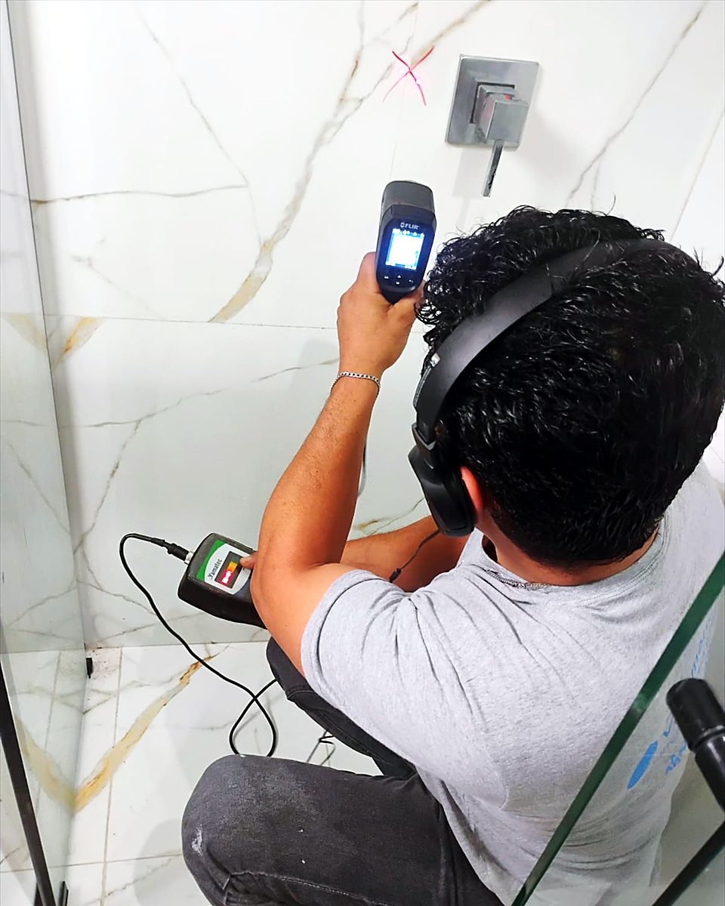
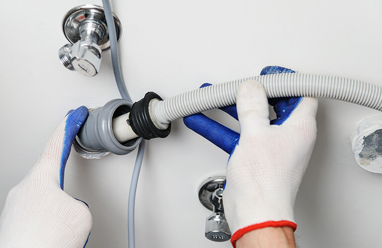
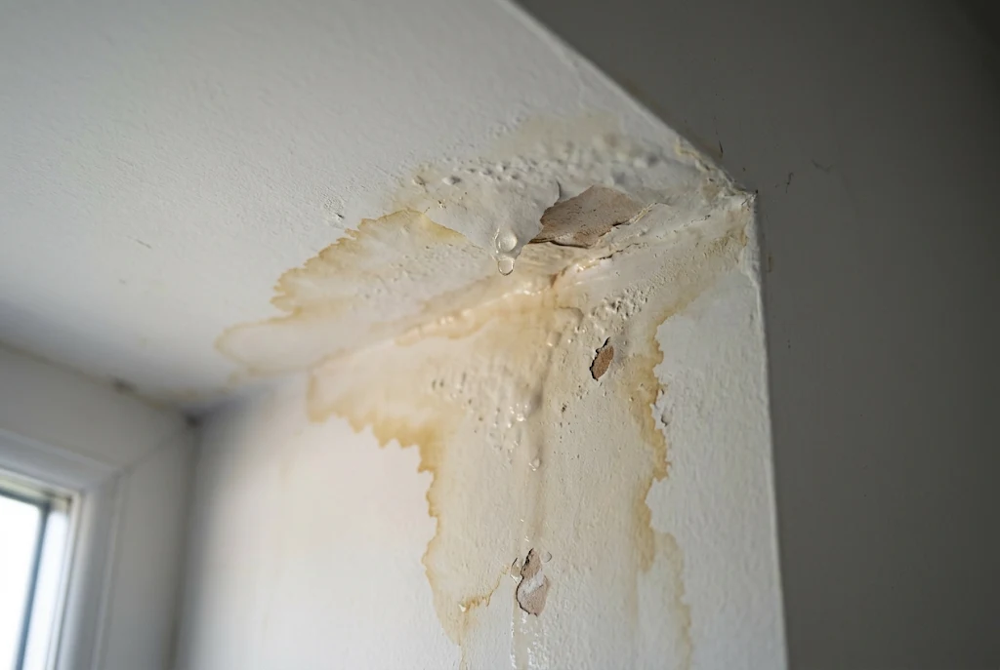
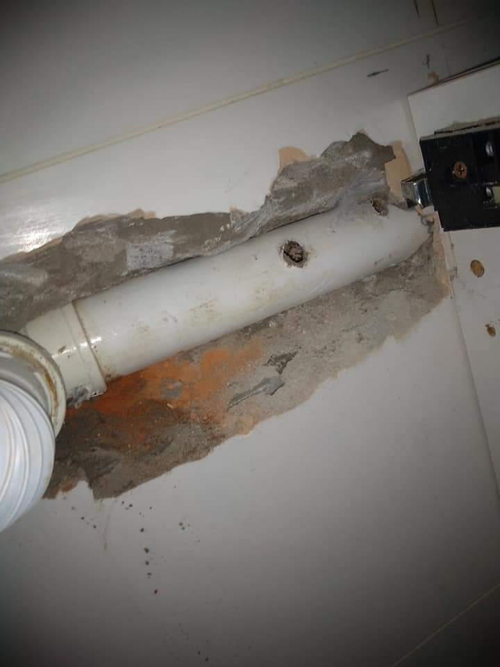
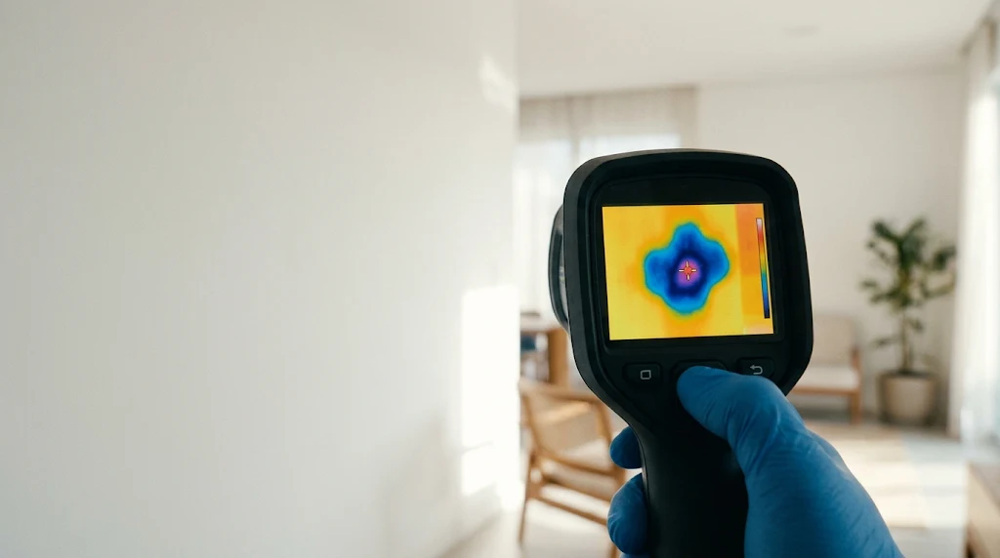
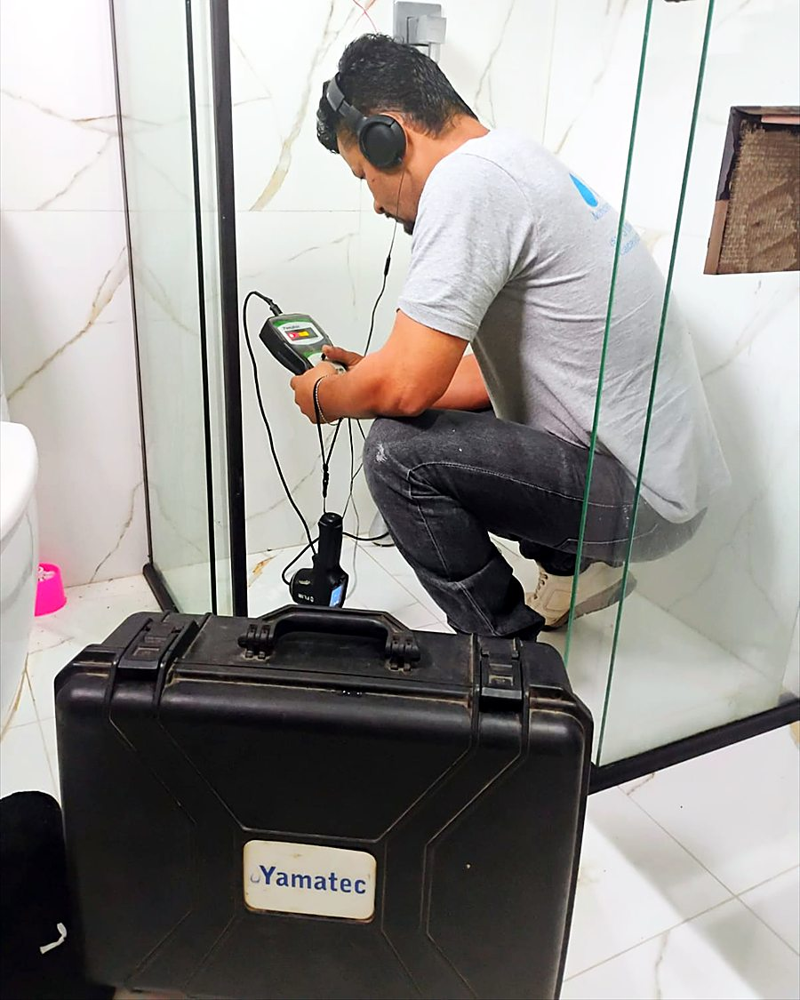
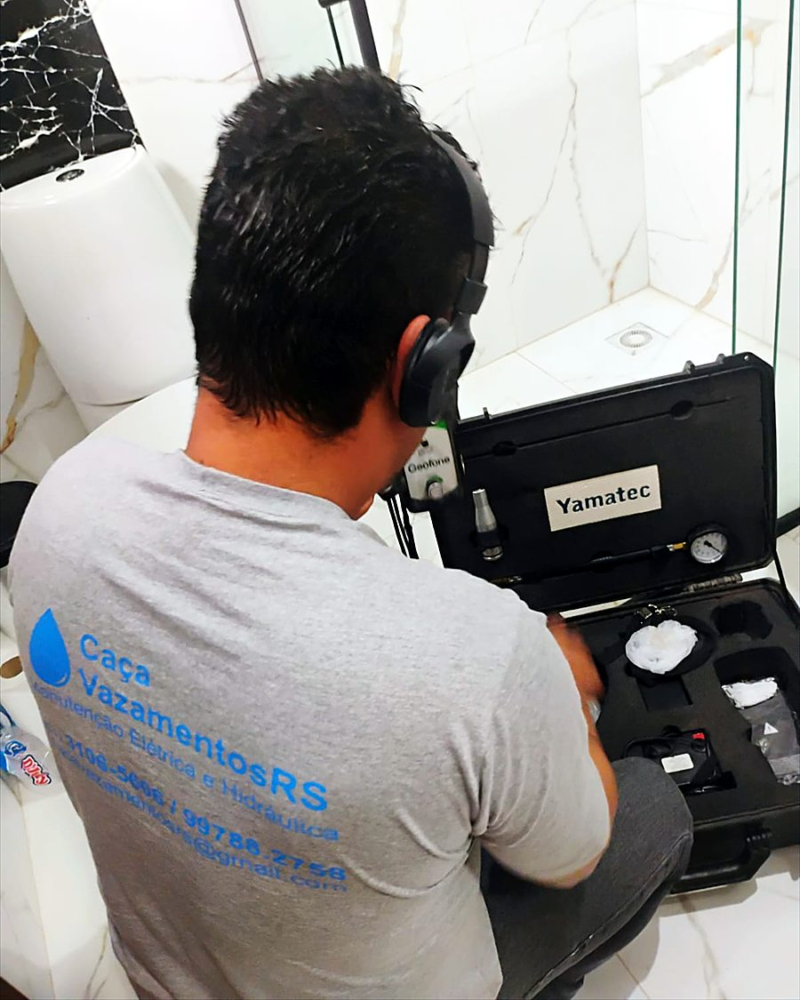
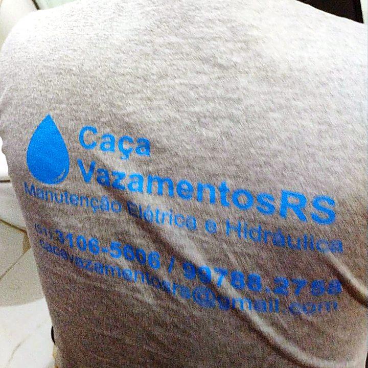

Identificamos o ponto exato do vazamento oculto com tecnologia acústica (geofone) e termográfica, evitando que você quebre paredes ou pisos sem necessidade. Em vazamentos ocultos embaixo do solo ou do piso, emitimos relatório técnico para você pedir a revisão da conta junto ao DMAE.

Um vazamento oculto na tubulação pode desperdiçar milhares de litros por dia e aumentar sua conta de água em até 50%. Confira os sinais mais comuns:

A fatura dobrou ou triplicou sem mudança na rotina da casa ou empresa? O hidrômetro continua girando mesmo com todas as torneiras fechadas?

Pintura descascando, bolhas no reboco, manchas escuras perto do rodapé ou cheiro constante de mofo indicam infiltração ativa na parede.

Água brotando pelo rejunte do piso frio, calçada, quintal ou garagem sem origem aparente.

Goteiras ou manchas no teto do apartamento de baixo, ou queda rápida no nível de água da piscina e reservatórios.
Não perca tempo! Entre em contato agora e resolva seu problema rapidamente.
Falar no WhatsApp *Valores das contas ilustrativos.Esqueça o método antigo de "tentativa e erro" quebrando a parede ou o piso inteiro para achar um cano furado. A equipe da Detecção de Vazamentos RGS utiliza equipamentos eletrônicos de última geração que rastreiam o ruído e a assinatura térmica da água sob pressão, marcando o ponto exato da ruptura antes de qualquer intervenção.


Capta ondas sonoras de baixa frequência causadas pelo escape de água a até 3 metros de profundidade.
Mapeia diferenças de temperatura atrás de paredes e pisos para detectar umidade oculta sem contato físico.
Acessam os pontos mais difíceis da rede hidráulica, levando a escuta do vazamento até onde o geofone não alcança.
Mede a pressão exata da rede hidráulica de água fria e água quente para confirmar se existe vazamento na tubulação.
Quando o vazamento é oculto, embaixo do solo ou do piso, e não aparece a olho nu, você pode solicitar ao DMAE a revisão do valor excedente da conta. Nós localizamos o vazamento e emitimos o relatório técnico para acompanhar o seu pedido.
Relatório técnico completo com registro fotográfico antes e depois do reparo
Emitido somente para vazamentos ocultos embaixo do solo ou do piso
Nota fiscal e termo de garantia formal do serviço executado
O laudo técnico é um documento de engenharia e só pode ser emitido por engenheiro habilitado, com registro no CREA. O que nós emitimos é o relatório técnico da localização do vazamento, que você apresenta ao DMAE no pedido de revisão da conta.
Transparência em cada passo do atendimento.
Você chama no WhatsApp ou liga para nosso plantão e relata os sintomas (conta alta, umidade ou ruído).
Nosso técnico vai até o local com geofone e câmera térmica para realizar o rastreamento completo da rede hidráulica.
Identificamos o local exato do vazamento sem quebrar áreas saudáveis do seu imóvel.
Executamos o conserto pontual no local demarcado. Se o vazamento for oculto sob o solo ou o piso, entregamos o relatório técnico para o DMAE.
Cada tipo de edificação exige um diagnóstico personalizado. Nossa equipe está preparada para todos.
Proteção máxima para pisos porcelanatos, laminados e alvenarias internas, evitando sujeira e reformas desnecessárias.
Rastreamento de colunas principais, barriletes, cisternas e áreas comuns com relatório técnico detalhado para prestação de contas.
Atendimento ágil, inclusive fora do horário comercial, para resolver o problema sem paralisar a operação do seu negócio.
Detecção subaquática e testes de estanqueidade em tubulações de hidrantes e sistemas de combate a incêndio.
Veja o que nossos clientes dizem sobre o serviço.
"A conta veio R$ 1.850 e dois encanadores queriam quebrar toda a minha cozinha. A equipe achou o vazamento debaixo do piso em 40 minutos quebrando apenas uma peça de porcelanato. Com o relatório, consegui o abatimento na fatura!"
"Atendimento muito rápido e técnico extremamente educado. Resolveram uma infiltração no teto do meu apartamento que já durava meses."
"Contratei para o condomínio onde sou síndico. Entregaram um relatório impecável com fotos e resolveram o vazamento no barrilete no mesmo dia."
Reunimos as perguntas mais comuns dos nossos clientes em Porto Alegre.

Cada dia de espera aumenta o valor da sua próxima fatura e o risco de danos estruturais no seu imóvel. Fale agora com um técnico plantonista.